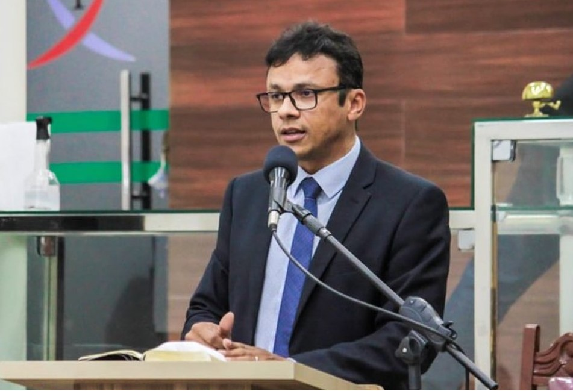

Justiça cassa mandatos do prefeito e vice de Passo de Camaragibe
Decisão aponta abuso de poder político e econômico durante o ano eleitoral de 2024.
A juíza da 12ª Zona Eleitoral, Priscilla Emanuelle de Melo Cavalcante, julgou a Ação de Investigação Judicial Eleitoral (Aije) e cassou os mandatos do prefeito de Passo de Camaragibe, Ellisson Santos da Silva (Republicanos), e do vice-prefeito Adelido Petrúcio dos Santos (Republicanos). A decisão foi publicada nesta quinta-feira (27) e a ação foi movida com base em abuso de poder político, consistente na ampliação indevida de contratações e de gastos com pessoal durante o exercício de 2024, em ano eleitoral, com o objetivo de beneficiar a candidatura à reeleição.
A Aije foi proposta pela coligação “Lavinia da Vânia: pra cuidar da nossa gente”, formada pela candidata Lavínia da Vânia (MDB), juntamente com Maria Lavínia Farias Quirino Costa e Luciano Leocádio Teixeira Nogueira Filho. No pleito de 2024, o candidato reeleito obteve 6.934 votos, enquanto a candidata investigante alcançou 3.347 votos — diferença de 3.587 votos.
Nos autos do processo, os relatórios consolidados apontam que, entre março e julho de 2024, a folha de pagamento da Prefeitura de Passo de Camaragibe saltou de aproximadamente R$ 3,2 milhões para R$ 4,8 milhões, representando aumento global de cerca de 50%. Quando analisados apenas os servidores comissionados e contratados temporários, a elevação é ainda mais acentuada: de R$ 1,2 milhão para R$ 1,9 milhão, o que equivale a um acréscimo próximo de 60% no comparativo semestral.
Na sentença, a juíza Priscilla Emanuelle destacou que acolheu o parecer do Ministério Público e reconheceu a prática de abuso de poder político-econômico, fundamentado no uso indevido da máquina administrativa municipal, por meio de contratações e nomeações em massa de servidores comissionados e temporários em pleno ano eleitoral, com a finalidade de obter vantagem indevida e desequilíbrio do pleito.
Como consequência da decisão, a Justiça determinou a cassação dos diplomas de Ellisson Santos da Silva e Adelido Petrúcio dos Santos; declarou a inelegibilidade de ambos os investigados para as eleições que se realizarem nos oito anos subsequentes ao pleito de 2024; e ordenou a realização de novas eleições para os cargos de prefeito e vice-prefeito do Município de Passo de Camaragibe.
Prefeito e vice permanecem nos cargos
Pela legislação eleitoral, a execução desta decisão observará o entendimento firmado pelo Tribunal Superior Eleitoral (TSE) e pelo Supremo Tribunal Federal (STF). Isso significa que o afastamento dos eleitos e a convocação de novas eleições só ocorrerão após o esgotamento de todos os recursos nas instâncias ordinárias, salvo se concedida medida cautelar pela instância extraordinária.
Dessa forma, o prefeito e o vice-prefeito de Passo de Camaragibe podem recorrer da sentença e permanecem nos cargos até julgamento final do caso pelo Tribunal Regional Eleitoral de Alagoas (TRE/AL).
O prefeito Ellisson Santos se manifestou por meio de nota. Confira a nota na íntegra:
Venho esclarecer que minha defesa ainda não foi oficialmente intimada da sentença proferida pela juíza da 12ª Zona Eleitoral de Passo de Camaragibe.
Ressalto que a sentença, que parte de premissas equivocadas, será devidamente recorrida dentro do prazo legal.
Reafirmo que sempre respeitei integralmente as regras eleitorais, conduzindo minha gestão com responsabilidade, seriedade e compromisso com a população. O apoio expressivo recebido nas urnas e o elevado grau de aprovação popular refletem o reconhecimento do trabalho realizado.
Continuarei exercendo normalmente minhas funções, trabalhando diariamente para melhorar a vida da população de Passo de Camaragibe e honrar a confiança que me foi dada.
Passo de Camaragibe, 27 de novembro de 2025.
Ellisson Santos